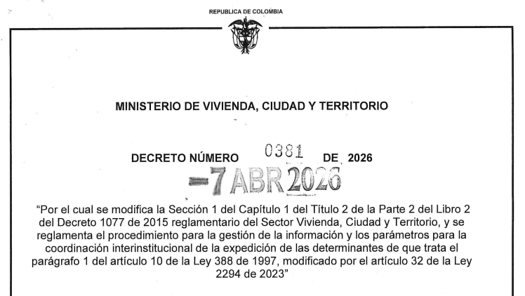
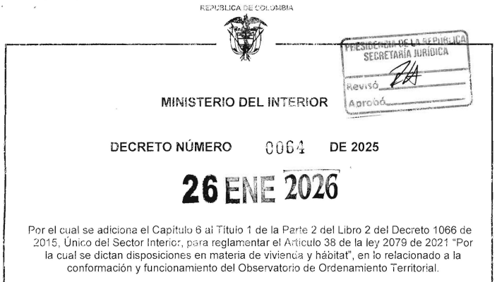
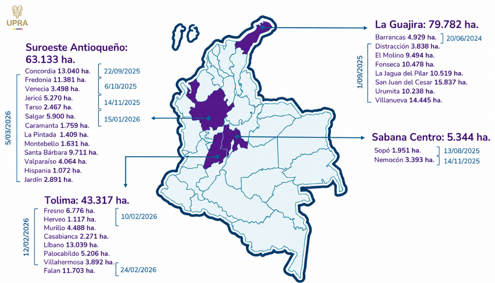

Accede a nuestros módulos
Seleccione la herramienta que necesita para su análisis territorial.
Consulta Normativa
Motor RAG sobre 56 normas territoriales. LLM + ChromaDB + búsqueda híbrida.
Determinantes del OT
Carga una zona y evalúa la viabilidad predial con 4 agentes LangGraph.
Indicadores Territoriales
8 indicadores espaciales precalculados: cobertura vegetal, amenazas, brechas.
Colombia OT 2.0 en datos
Cifras clave de Colombia OT 2.0.
Herramientas para el Ordenamiento Nacional
Accede a información territorial actualizada, mapas interactivos y análisis asistidos por inteligencia artificial para apoyar la gestión y planificación territorial.

Gobierno Nacional reglamenta nuevo procedimiento para el ordenamiento territorial centrado en las determinantes de ordenamiento
El Decreto 0381 del 07 de abril de 2026 reglamenta el procedimiento para la gestión de la información y establece parámetros estrictos de coordinación interinstitucional para la expedicción de las determinantes de ordenamiento territorial.

Gobierno Nacional reglamenta la creación de Colombia OT con el Decreto 64 de 2026
El Decreto 64 de 2026 reglamenta la conformación y funcionamiento de Colombia OT (OOT), cuyo objetivo es recopilar, analizar y disponer de información técnica y científica para el soporte de políticas públicas de OT.

Colombia supera las 197.000 hectáreas declaradas como Áreas de Protección para la Producción de Alimentos (APPA)
Un hito histórico para la seguridad alimentaria del país. Las APPA representan el compromiso del Estado con los campesinos y las comunidades rurales, garantizando que las tierras dedicadas a la producción de alimentos permanezcan en el tiempo.